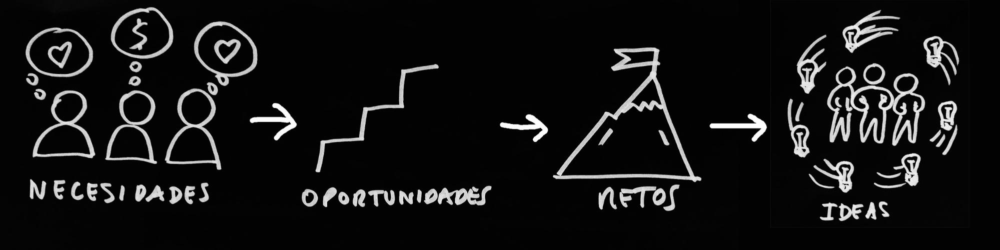

Principios

Asegurar un ambiente propicio para hacer viables los principios del Design Thinking es tan importante o más que conocer la metodología y las herramientas.
Los principios en Design Thinking son:
1- CENTRADO EN LAS PERSONAS
La metodología de design thinking se basa en la observación de las personas, el conocimiento de sus necesidades y problemas.
La empatía, saber ponerse en la piel de distintos tipos de personas usuarias, es clave para poder trabajar esta metodología.
Profundizamos en las necesidades de las personas, tratando de conectar con sus emociones, con sus historias personales. Necesitamos saber qué piensan, que oyen, que hablan, qué sienten.
De las necesidades de las personas surgen las oportunidades, y de las oportunidades surgen los retos y las ideas de mejora.

La tecnología y la ciencia, están al servicio de las personas, son un medio para resolver las necesidades detectadas, para mejorar sus vidas, no son un fin en sí mismo.


Video Tim Brown 2
¿Cómo empieza la innovación?
Tim Brown y Don Norman
2- EQUIPOS MULTIDISCIPLINARES
Design thinking se aplica en la resolución de problemas complejos y para eso es necesario combinar diferentes perspectivas, conocimiento y puntos de vista.
Un equipo ideal estaría compuesto por personas diversas que trabajan colaborativamente.
La jerarquía no es amiga del design thinking. Cuando un individuo entra en un equipo es como los demás.
Los procesos de Design Thinking también están ligados a procesos de participación, sobretodo en aquellos proyectos o retos de marcado tinte social. No obstante, en general, es aconsejable que se interactúe con las personas usuarias, se las haga partícipe del proceso, se las integre en el mismo, al menos en las fases de investigación, de creación y de testeo.
En este punto es esencial tratar la figura del dinamizador o facilitador, aquella persona especialista en diseño, que ayuda a dinamizar el grupo y que en los momentos de confusión o bloqueo, puede proponer alternativas, puede ayudar a la visualización de ideas o soluciones, o a centrar al equipo en la toma de decisiones para que pueda ir avanzando.

3- CREATIVIDAD Y VISUALIZACIÓN
La creatividad es clave en los procesos de design thinking. Para que la creatividad se de en un equipo es necesario potenciar la confianza creativa de las personas que lo componen.
El individuo que participa en un proceso de Design Thinking debe sentirse libre para aportar su punto de vista, para probar soluciones…
Las ideas se visualizan, se expresan con dibujos, esquemas, comics, y todo tipo de representaciones para hacerlas comprensibles, para que otros construyan sobre ellas.
Las ideas no son de nadie. Fluyen, se entrelazan, se hibridan....

Ejemplo de cómo expresar con un esquema muy sencillo la siguiente observación: “La perspectiva de los adultos, su mirada, no incluye, en ocasiones, la de la infancia y viceversa”. La visualización de esta observación surgió en un proyecto para la mejora de los servicios públicos con el objetivo de poner en el centro a la ciudadanía.
En la Conferencia Serious Play de 2008, el diseñador Tim Brown habla de la poderosa relación que existe entre el pensamiento creativo y el juego.
4- HACER, ACCIÓN, PROTOTIPAR
En los procesos de Design Thinking se evita hablar demasiado, debatir sin más.
Se lleva a cabo un trabajo en el que en cuanto es posible se pasa a la acción, a la construcción, a la visualización. Es importante tener entre nuestros objetivos, el que la persona usuaria pueda probar las ideas lo antes posible, y para eso hay que construirlas.
No hay que confundir el concepto de prototipo para Design Thinking, con el concepto tradicional en el sector industrial, por ejemplo. El primero es primario, básico y sencillo. El segundo se refiere a un modelo que es prácticamente igual que el producto terminado, puede ser funcional y estar construido en el material definitivo. Los objetivos al construir uno u otro prototipo son diferentes. Mientras el primero solo pretende ser un medio para evolucionar la idea, el segundo pretende validar la solución final y hacer comprobaciones para fabricación.
Durante el proceso de Design Thinking, se realizan prototipos, modelos sencillos, que se van mejorando y completando. Sirven para transmitir y probar soluciones con las personas usuarias y para que estas nos aporten su opinión y nos señalen áreas de mejora.
Estos prototipos pueden ser desde un vídeo, una representación teatral, un escenario construido con recortables, con personajes de papel o unos cartones formando un espacio, por ejemplo. Cualquier material que esté a nuestra disposición puede servirnos para prototipar soluciones: plastilina, piezas de construcción, cartón, material reciclado…

Prototipo construído con piezas recicladas, plastilina y piezas de construcción por un equipo de alumnos de 2º ESO para poder testear con alumnado y profesorado la idea de un club de lectura.
“Doing, not talking!” Global GovJam
5- ITERAR
El proceso no es lineal. Una de las características del trabajo con esta metodología es que el equipo necesita volver atrás para después seguir avanzando.
Los prototipos se prueban una y otra vez, se testean, se mejoran, surgen nuevas ideas, y se vuelven a prototipar…
Un prototipo no es para enseñar o presentar una idea a un comité, es para probar.
Cuando los usuarios lo prueban descubren lo que les gusta, los fallos y áreas de mejora.
Tomamos notas de todo lo que aportan. Integramos las mejoras en el prototipo y lo volvemos a testar…
El trabajo nunca está terminado: El equipo estará continuamente rediseñando, evolucionando, mejorando y adaptándose a las personas y al contexto.
Estos cinco principios se pueden poner en práctica poco a poco, intentando construir ambientes colaborativos, abiertos y respetuosos en los entornos donde se quiera trabajar la metodología en equipo.os y sin jerarquías.

Design Thinking en educación por Elena Bernia bajo licencia Creative Commons Reconocimiento-NoComercial-CompartirIgual 4.0 Internacional License.